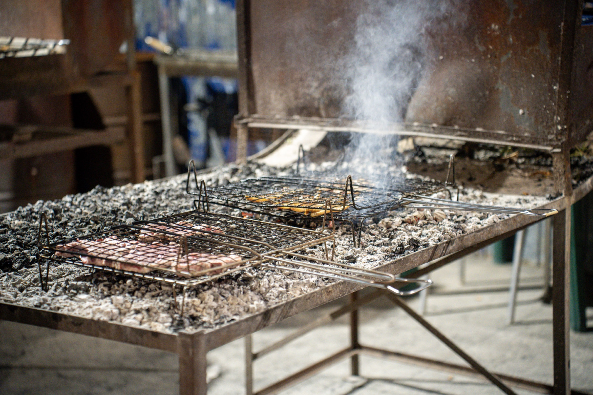

Parliamone
Scrivi al Circoletto FASF
Sei una band, uno sponsor o un'associazione e vuoi proporti per la prossima Sant'Egidio in Festa? Raccontaci la tua idea.
📍
Dove siamo
Parco ex asilo
Via Sant'Egidio 35
Borgo Trevi (PG)
Crediti
Foto e video
Il materiale fotografico e video di Sant'Egidio in Festa è a cura di Alessio Cipicciani e Ilaria Damiani.